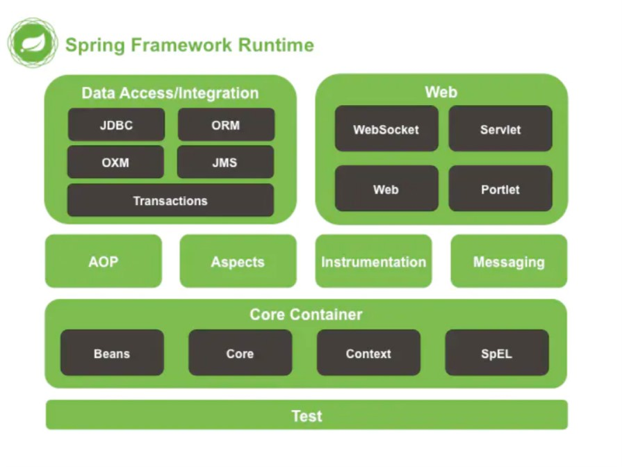

什么是耦合（高/低？）
耦合，就是模块间关联的程度，每个模块之间的联系越多，也就是其耦合性越强，那么独立性也就越差了，所以我们在软件设计中，应该尽量做到低耦合，高内聚。
生活中的例子：
家里有一条串灯，上面有很多灯泡，如果灯坏了，你需要将整个灯带都换掉，这就是高耦合的表现，因为灯和灯带之间是紧密相连，不可分割的，但是如果灯泡可以随意拆卸，并不影响整个灯带，那么这就叫做低耦合。
代码例子：
1 | Father f = new Son(); |
Son类继承自Father类，通过 new来创建依赖的对象调用方法
此时如果你想把Son换成Girl类，那么所有 new Son()的地方都要修改，这只是简单的举例，在实际开发中有上百个类，你不可能这样去操作。
这时候我们把对象的创建交给Spring，那么效率就大大地提升了。
1 | Father f = BeanFactory().getBean(B名称); |
只需要修改getBean里的参数即可。
Spring 框架好在哪里？
- 降低耦合度：Spring神奇的 IoC 容器，可以控制对象间的依赖关系，解决了硬编码问题
- AOP 编程支持：Spring 提供了面向切面编程
- 方便集成各种优秀框架：Spring 不排斥各种优秀的开源框架
- 方便程序测试：Spring 支持 junit4
- 声明式事务的支持：Spring 帮助我们从普通的事物管理代码中解放出来，通过配置就可以完成对事务的管理
- 降低 JavaEE API 的使用难度：Spring 将 JavaEE 中一些比较难用的 API (JDBC、JavaMail、远程调用等) 进行了封装，使得它们的使用难度大大降低
Spring 框架的结构
Spring框架是一个分层的架构，根据不同的功能，分成了多个模块，而这些模块都是可以单独或者组合使用。

CoreContainer是Spring框架的最核心部分，其他模块都是基于该模块建立的。
核心容器 CoreContainer
提供 Spring框架的基本功能，分为图中四个模块，核心容器中重要的组件就是 BeanFactory ，本质就是实现了工厂模式，且它使用了 IoC（控制反转）模式，将程序的配置以及依赖性规范与实际程序的代码分开。
-
Beans：提供了 BeanFactory，Spring中将管理对象称作 Bean
-
Core：提供 Spring 框架的基本组成部分，包括我们首先要学习的 IoC 和 DI
-
Context：访问定义和配置任何对象的媒介，以前两者为基础，ApplicationContext 接口是这部分的重点
-
spEL (Spring Expression Language)：一个比较强大的运行时查询和操作数据的表达式语言
数据访问/集成（Data Access/Integration）
-
JDBC：提供了一个JDBC抽象层，减少了一些重复无聊的JDBC代码，提升了开发效率
-
ORM：提供了对流行对象关系映射API的集成层 （JPA、JDO、Hibernate、 mybatis ）
-
OXM：提供了一个支持对象/XML映射实现的抽象层（ JAXB、Castor、XMLBeans、JiBX 、XStrea ）
-
JMS：Java消息服务， 包含用于生产和消费消息的功能
-
Transactions：事务模块，用于支持实现特殊接口和所有的POJO的类的编程和声明式事物管理
Web 模块
-
Web：提供了基本的 Web 的集成功能，例如多部分文件上传功能，以及初始化了一个使用了Servlet监听器和面向Web应用程序上下文的 IoC 容器，它还包含一个HTTP客户端和Spring远程支持的相关部分
-
Servelt：包含 Spring 模型—视图—控制器 (MVC) ，用来实现Web应用
-
WebSocket：Spring4.0以后新增的模块，它提供了WebSocket和SocketJS的实现
-
Portlet：就好像是Servlet一般，它提供了Portlet环境下的MVC实现
其余模块
-
AOP：提供了面向切面编程的能力，允许定义方法拦截器和切入点，按功能分离代码，降低耦合性，可以实现一些面向对象编程中不太好实现的功能
-
Aspects：提供与 AspectJ 的继承，是一个功能强大且成熟的面向切面编程的框架
-
Instrumentation：提供了类工具的支持和类加载器的实现，可以在特定的应用服务器中使用
-
Messaging： 它提供了对消息传递体系结构和协议的支持
-
Test：其支持使用 JUnit 或者 TestNG，可以实现单元测试，集合测试等测试流程
Spring IOC原理
Inversion of Control，控制反转。是面向对象编程中的一种设计原则，可以用来减低计算机代码之间的耦合度。
通过控制反转，对象在被创建的时候，由一个调控系统内所有对象的外界实体将其所依赖的对象的引用传递给它。也可以说，依赖被注入到对象中。
IoC 内部核心原理就是反射技术，涉及到 Bean 对象的初始化构建等步骤。
Java 反射
Java反射机制是在运行状态中，对于任意一个类，都能够知道这个类的所有属性和方法；对于任意一个对象，都能够调用它的任意方法和属性；这种动态获取信息以及动态调用对象方法的功能称为java语言的反射机制。
在日常的第三方应用开发过程中，经常会遇到某个类的某个成员变量、方法或是属性是私有的或是只对系统应用开放，这时候就可以利用Java的反射机制通过反射来获取所需的私有成员或是方法。
反射机制相关类：
| 类名 | 用途 |
|---|---|
| Class类 | 代表类的实体，在运行的Java应用程序中表示类和接口 |
| Field类 | 代表类的成员变量（成员变量也称为类的属性） |
| Method类 | 代表类的方法 |
| Constructor类 | 代表类的构造方法 |
对于每个类都有自己得子方法，这里不作过多解释，推荐一篇反射文章—详细请看 Java高级特性——反射
Spring 入门程序
使用Eclipse创建一个名为Demo的项目，添加Spring相关的依赖包，commons-logging-1.2.jar、spring-beans-4.3.6.RELEASE.jar、spring-context-4.3.6.RELEASE.jar、spring-core-4.3.6.RELEASE.jar、spring-expression-4.3.6.RELEASE.jar。
在项目的src目录下，创建一个org.ioc包，并在包下创建接口UserDao，然后接口中定义一个say()方法：
1 | public interface UserDao(){ |
接着在ioc报下创建该接口的实现类UserDaoImpl，实现接口中的方法，并输出一条语句：
1 | public class UserDaoImpl implements UserDao{ |
在src下创建spring的配置文件applicationContext.xml，并配置一个id为userDao的Bean：
1 | <bean id="userDao" class="org.ioc.UserDaoImpl"/> |
该段代码表示在spring容器中创建一个id为userDao的bean实例，其中class属性用于指定需要实例化的Bean类。
在ioc包下，创建测试类TestIoc，编写main方法，在mian方法里面初始化spring容器，加载配置文件，获取userDao对象实例，最后调用say()方法输出：
1 | public class TestIoc { |
最后控制台输出：
1 | userDao say Hello World |
从测试方法可以看出，并没有通过new关键字来创建UserDao接口的实现类对象，而是通过Spring容器来获取实现类对象，这就是Spring IOC 容器的工作机制。
依赖注入DI
控制反转（IoC）是一种思想，而依赖注入（Dependency Injection）则是实现这种思想的方法。
其实泛概念上两者是接近的，可以简单的理解为一个概念的不同角度描述。
DI的作用是在使用Spring框架创建对象时，动态地将其所依赖的对象注入Bean组件中。
上面写程序的时候，通过控制反转，使得 Spring 可以创建对象，这样减低了耦合性，但是每个类或模块之间的依赖是不可能完全消失的，而这种依赖关系，我们可以完全交给 spring 来维护。
DI实现方式
构造方法注入：基于构造方法的依赖注入通过调用带参数的构造方法来实现，每个参数代表一个依赖。
这一种的前提就是：类中必须提供一个和参数列表相对应的构造函数
1 | public class DemoServiceImpl implements DemoService { |
在ApplicationContext.xml文件中添加如下：
1 | <bean id="demoService" class="org.service.impl.DemoServiceImpl"> |
属性解析：
-
constructor-arg
-
给谁赋值：
-
index：指定参数在构造函数参数列表的索引位置
-
type：指定参数在构造函数中的数据类型
-
name：指定参数在构造函数中的名称（更常用）
-
赋什么值：
-
value：这里可以写基本数据类型和 String
-
ref：这里可以引入另一个bean，帮助我们给其他类型赋值（例如文中 birthday ）
测试后发现可以打印出我们在配置文件配置的value值。
上面就是使用类的构造函数给成员变量进行赋值，但特别的是，这里是通过配置，使用 Spring 框架进行注入。
setter方法注入：通过调用无参构造器或无参静态工厂方法实例化bean后调用该bean的setter。
修改以上配置文件
1 | <bean id="demoService"class="cn.service.impl.DemoServiceImpl"> |
property
- name：与成员变量名无关，与set方法后的名称有关，例如 setUsername() 获取到的就是username，并且已经小写了开头
- value：这里可以写基本数据类型和 String
- ref：这里可以引入另一个bean，帮助我们给其他类型赋值（例如文中 birthday ）
实现的效果和上面的一样
Spring AOP原理
Aspect Oriented Programming，面向切面编程。通过预编译方式和运行期动态代理实现程序功能的统一维护的一种技术。AOP 是 OOP 的延续，是软件开发中的一个热点，也是 Spring框架中的一个重要内容，是函数式编程的一种衍生范型。利用 AOP 可以对业务逻辑的各个部分进行隔离，从而使得业务逻辑各部分之间的耦合度降低，提高程序的可重用性，同时提高了开发的效率。其中，最常用的使用场景一般有日志模块、权限模块、事物模块。
AOP 的内部原理其实就是动态代理和反射了。主要涉及到的反射类：
| 类 | 说明 |
|---|---|
| InvocationHandler | 通过这个接口定义横切的逻辑，然后通过反射机制调用目标类的方法，这样就能动态地把非业务逻辑和业务逻辑动态得拼接在一起 |
| proxy | 提供创建动态代理类得静态方法，通常利用INvocationHandler创建代理实例，来间接得调用代理的方法 |
Spring 中实现动态代理有两种方式可选。
JDK 动态代理
必须实现 InvocationHandler 接口，然后通过 Proxy.newProxyInstance(ClassLoader
loader, Class[] interfaces, InvocationHandler h) 获得动态代理对象。
CGLIB 动态代理
使用 CGLIB 动态代理，被代理类**不需要强制实现接口。**CGLIB 不能对声明为 final的方法进行代理，因为 CGLIB 原理是动态生成被代理类的子类。